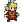

| - | Character | Speed | - | - | Score | - |
|---|---|---|---|---|---|---|
| Aria | 8:55.83 | 86th | 4432 | 827th | ||
| Bard | 6:46.30 | 313th | - | - | ||
| Bolt | 7:13.01 | 186th | 4416 | 197th | ||
|  | Cadence | 8:29.07 | 276th | 6026 | 4535th | |
| Diamond | 6:56.90 | 140th | 3866 | 3225th | ||
| Dorian | 5:36.21 | 109th | 3534 | 371st | ||
| Dove | 3:11.89 | 49th | 2292 | 37th | ||
| Eli | 8:34.19 | 68th | 3753 | 801st | ||
| Mary | 8:41.71 | 70th | 4715 | 235th | ||
| Melody | 7:21.28 | 137th | 6231 | 721st | ||
| Monk | 9:47.92 | 66th | 6161 | 312th | ||
| Nocturna | 8:28.42 | 90th | 17566 | 182nd | ||
| Tempo | 6:25.09 | 154th | 7301 | 116th | ||
| Coda | - | - | 1355 | 94th | ||
| Story | 54:20.76 | 103rd | 11984 | 914th | ||
| 9char | - | - | 2009 | 1438th | ||
| 13char | 3:45:16.86 | 77th | 41753 | 44th |
| Speed | Aria | Bard | Bolt | Cad | Dia | Dor | Dove | Eli | Mary | Mel | Monk | Noc | Tempo | Coda |
|---|---|---|---|---|---|---|---|---|---|---|---|---|---|---|
| Hard | - | 10:49.6633rd | - | - | - | - | - | - | - | - | - | 20:37.55182nd | - | - |
| NR | - | - | - | 15:14.1590th | - | - | 4:36.1019th | - | - | 10:46.8516th | - | - | - | - |
| Rando | - | - | - | 18:44.33136th | 19:53.4867th | - | 4:43.6010th | - | - | 8:11.9415th | - | 9:33.8610th | - | - |
| Phasing | - | - | - | - | - | - | 4:27.3891st | - | - | - | - | - | - | - |
| Mystery | 18:50.7511th | - | - | 12:12.6319th | - | - | - | - | - | 15:08.4544th | - | 18:49.5035th | - | - |
| Score | ||||||||||||||
| Hard | 76465th | 4180668th | 209856th | - | - | - | 56913th | - | - | - | - | 39812803rd | - | 6438th |
| NR | 63137th | - | - | 5825123rd | - | - | 23832nd | - | - | 224636th | - | - | 175330th | 5227th |
| Rando | 63382nd | - | - | 36241710th | 2571335th | - | 33040th | 1147121st | 54277th | 3153431st | - | 32071692nd | - | 17834th |
| Phasing | 196147th | - | - | - | - | - | 107271st | - | 42596th | - | - | - | 185350th | 87116th |
| Mystery | 44305th | - | - | 2706559th | - | - | - | 493194th | - | 2660222nd | 73228th | 666615th | 32564th | 11223rd |
| Deathless | 1-2-178th | 5-1-1109th | 2-1-474th | 1-1-31888th | 0-5-279th | 2-1-142nd | 4-3-344th | 0-1-294th | 0-4-358th | 3-1-264th | 0-4-275th | 0-2-2498th | 1-4-247th | 0-1-351st |
Last Updated:2021/06/14 09:56